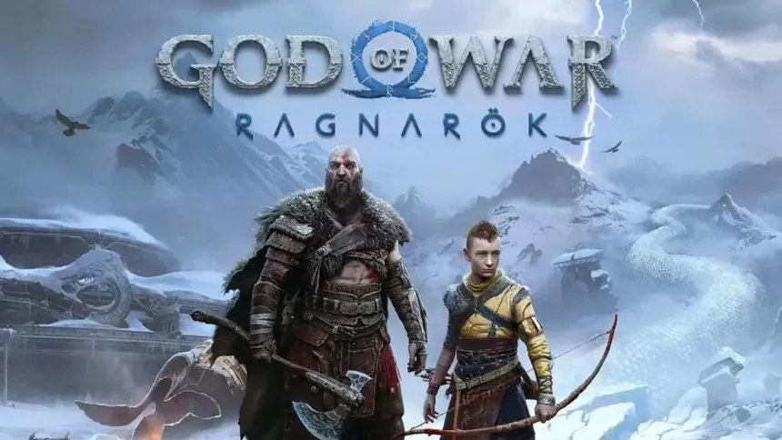
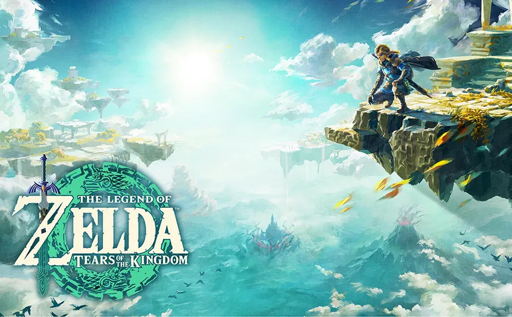
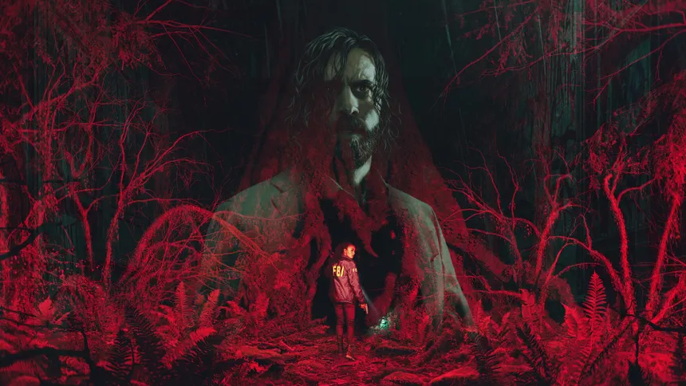

Alex's Top 3 Video Games of All Time
God of War Ragnarok
God of War Ragnarok enhances the saga with its breathtakingly detailed mythological world, deepened combat mechanics, and emotionally gripping narrative. It sets itself apart with:
- AAA Graphics and Quality
- Blockbuster level story writing
- Incredible Combat
Legend of Zelda: Tears of the Kingdom
Pushes the boundaries of open-world adventure games with its innovative puzzle-solving mechanics, expanded use of creative building tools, and a deeper dive into Hyrule's ancient lore. The game excels in:
- Freedom to Explore
- Unique puzzles
- Groundbreaking crafting and fuse system
Alan Wake II
Alan Wake 2 brings a thrilling continuation to its story-driven gameplay with a darker, more immersive horror experience, enriched character depth, and refined suspense-building techniques. This game stands out due to its:
- Unique visual style
- Haunting Atmosphere
- Cinema level graphics and storytelling
- Click this if you need any further persuasion